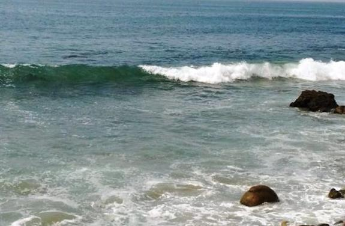

- Calendar
- Education
- Beginners
- Beyond The Basics
- Freediving
- Prepared Diver
- Beyond the Edge
- Go Pro
- Experienced Diver
- Kids Programs
- Boy Scouts
- Camp Emerald Bay Videos
- About Camp Emerald Bay Catalina
- SCUBA BSA (Discover Scuba Diving) Partial Day
- Rugged Scuba Diver
- Rugged Oceanographers
- Rugged Rescue Divers
- Rugged Specialty Programs (Partial Day/Night)
- Discover Local Diving Programs (Partial Day/Night)
- Discover Snorkeling and PADI Skin Diver (Partial Day/Night)
- Pro Diver Programs
- Educational Series
- University Programs
- Travel
- Dive Travel
- World-Wide Diving
- So-Cal Destinations
- Local LA Dive Sites
- About Local LA Dive Sites
- Avalon (Wreck)
- Big Rock Beach
- Broad Beach
- Carbon Beach
- Corral Canyon Beach
- County Line Beach
- Deer Creek Beach
- El Matador Beach
- El Pescador Beach
- Escondido Beach
- Geffens Beach
- La Piedra Beach
- Las Tunas Beach
- Latigo Beach
- Leo Carrillo Beach
- Little Dume Beach
- Malibu Pier/Surfrider Beach
- Nicholas Canyon Beach
- Old Malibu Road Beach
- Palawan (Wreck)
- Paradise Cove Beach
- Point Dume - Westward Beach
- Star of Scotland (Wreck)
- Sunset Beach
- Topanga Beach
- Veterans Park Beach
- Boat Charters
- Special Dives & Events
- Gear
- Store
- Gallery
- About Us
- Blog
Gear
Neptune's Locker
Ocean's Lost & Found
“He who is shipwrecked the second time cannot lay the blame on Neptune”
~Ole' English Proverb
If you have lost or found an item, you can submit it using our Contact Us and we'll be happy to post the following information. If you have a photo of it or a like item, we'll include that as well.
Maybe, and that's a big maybe, if you are lucky and King Neptune is smiling down on you - someone will find your item. If a lost item is found, we will contact you.
Reported Lost Items:
| Date |
Item(s) |
Location | Other? |
| July 15, 2018 | Lost keys at the south part of Point Dume State Beach around 7-8:30 PM. Those are three keys that are chained together: a car key (Toyota), key with a key cover of dog face and a red key. A small doll of bear was also chained. I assume that those were lost in the sand beach, not in the sea. Rewards if found. |
Pointe Dume | If found, contact Malibu Divers. |
| May 14, 2018 | GoPro Hero5 while surfing at Zuma Beach attached to a head strap; half a mile south of the movie set trailers, 80-100 feet from shore |
Zuma Beach | If found, contact Malibu Divers. |
| May 5, 2018 | GoPro Hero5 attached to a broken ski pole pole which was only 18-24 inches long. |
Leo Carrillo | If found, contact Malibu Divers. |
| April 29, 2018 | GoPro Hero5 Black lost in the surf near last beach entry point from beach to point. Also lost both of his fins. |
Point Dume | If found, contact Malibu Divers. |
| Jan 27, 2018 | GoPro Hero 5 while surfing; waist deep water during high tide, in front of Tower 26 just slightly to the right of the lifeguard tower. Reward if found. |
near tower 26 in Santa Monica |
If found, contact Malibu Divers. |
| Sep 4, 2017 | I lost my go pro hero 5 black when recording near to beach can someone help me to find it. I was preparing a beautiful video in America but all is gone now. |
El Matador Beach | If found, contact Malibu Divers. |
| Aug 6, 2016 | A pair of prescription kids glasses and a silver GoPro | El Matador Beach | If found, contact Malibu Divers. |
| Aug 2, 2016 | Ricoh WG-30 Underwater camera | El Matador Beach |
If found, contact Malibu Divers. |
| Oct 4, 2015 | Mask and 1 Fin | Corral Canyon Beach | If found, contact Malibu Divers. |
| Oct 2, 2015 | Single Aqualung Slingshot Fin w/spring coil strap, L/XL, Gray/Black | Big Rock, south of Moonshadows | If found, contact John at jlmerrill@verizon.net |
| Aug 27, 2015 | Silver GoPro 3 Camera | Leo Carillo | lost close to shore in area 2 (the leashed dog area). Waist high depth Contact Mark butters5213@gmail.com |
| August 9, 2015 | Mares Clear & Blue Mask | Nicholas Cyn | Contact alisonthieme@gmail.com |
| Thanksgiving 2014 | Yellow Tilos Fantasia Mask prescription lenses & snorkel |
Malibu Rd | Easy to identify, and not very useful for many other people. |
| Late Oct 2014 | TUSA X-Pert Zoom Z3 Fin-Med-Blu | Topanga | One fin with spring strap in surf zone, contact Malibu Divers |
| Sep 27, 2014 | PADI Instructor OW & AOW Cue Card (Korean) | Malibu Pier | They are in Korean, so you can't use them! |
| June 8, 2014 | XL Blue Atomic Aquatic Split Fin | Peace Boat | Found Med. Blue Atomic Aquatic Split Fin; you took mine! Let's swap! |
| September 28, 2013 | Cressi fin with spring strap | Topanga Beach | Phone# on it contact: george@spanos1.com |
| September 28, 2013 | silver and black dive fin |
Webb Beach | Contact Katiebrister@gmail.com |
| August 31, 2013 | Go Pro Camera while diving | El Pescador Beach | Contact edbrecht@gmail.com |
| August 22, 2013 | Andre Speargun, 145cm |
Moonshadows |
Name & phone # on it |
| June 4, 2013 | Trident 4" X 6" Super Slate and Pencil | W Malibu Pier | contact store |
| ~ May 2013 | XL black fin, similar to a jet fin, spring strap | Corral Cyn. | If found, contact Malibu Divers. |
| March 23-24, 2013 | Aeris Velocity X3 black dive fin, Body Glove snorkel blue/clear |
Malibu Road | If found, contact Malibu Divers. |
| March 16, 2013 | Atomic Frameless, Black, Medium Fit | Escondido | If found, contact Malibu Divers. |
| February 9, 2013 | SP Jetsport, spring strap Black | Big Rock | If found, contact Malibu Divers. |
| November 12, 2012 | GoPro Camera | Leo Carillo | If found, contact Malibu Divers. |
| November 1, 2012 | Uwatec Aladin Air Z Nitrox Computer, blue | Escondido | Reward |
| September 15, 2012 | BCD Weight Pocket | Malibu Pier | Reward |
| April 7, 2012 |
Sealife Camera |
Anacapa Is |
Reward |
Reported Found Items:
| Date |
Item(s) |
Location | Other |
| ~ Thanksgiving 2014 |
yellow Tilos Fantasia with prescription lense |
||
| Nov 5, 2014 | SP Jetfin Large | Name it! | Tell us where you lost it. |
| Late Oct 2014 | GoPro Camera | Leo Carillo | Contact Malibu Divers & Describe |
| August 15, 2013 | BMW Remote/Key | Topanga Beach | Contact jamesscholl3@aol.com |
| July 24, 2013 | Bracelet | MD Store | Call & describe to claim. RETURNED!! |
| April 23, 2013 |
Speargun |
Leo Carillo Beach |
Call and describe gun to claim. |
| October 12, 2012 | GoPro Camera | Topanga Beach | Describe content to claim |
| September 15, 2012 | Ring of Keys | U/W at Malibu Pier | Coastal Clean-up Diver 2012 |
Want to hire one of our Pro's to see if they can find it?
Facebook Feed
Blog Feed
- Peace Boat to Anacapa: Sea Lions, Dolphins & Whales Oh My! 06-Feb-2016
- What Does Drowning look like? 26-Apr-2015
- No Cell Phones Allowed 04-Apr-2015
- Pro Scuba Training Lets You See the Real Picture 26-Mar-2015
- Love Diving? Take Your Passion One Step Further: Become a Rescue Diver 20-Mar-2015
- What Goes Down Must Come Up 02-Mar-2015
- So You Want To Be A Scuba Instructor? Read This Story 30-Jan-2015
- Not Just A Summer Vacation idea with Kids 23-May-2014
- Pro Scuba Training for a Career You Love 09-May-2014
- Freediving For Fun 30-Apr-2014
Subscribe to Newsletter
For the latest news, scuba deals, & information & Get our FREE Trip Packing Checklist
Get Social!